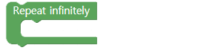
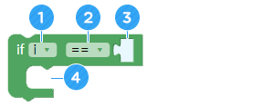

Perintah dengan tangan
• Memahami prinsip nilai status
• Memahami 4 nilai status.
• Buat dan jalankan tindakan berbeda sesuai dengan nilai status.
A. robot pendeteksi gerakan
Pernahkah Anda melihat robot di pusat perbelanjaan? Robot-robot ini melayani orang dan membantu mereka mendapatkan arahan. Untuk melakukan itu, robot memiliki banyak sensor dan program AI.
B. AsomeBot juga bisa mengenali gerakan tangan.
Meskipun Anda tidak dapat menjadikannya sebagus robot di bandara, AsomeBot dapat memahami dan menjalankan perintah yang kami lakukan dengan tangan.Kemudian, Anda dapat membuat AsomeBot melakukan apa yang Anda inginkan setiap kali Anda membuat program atau bahkan tanpa smartphone!
Untuk menggerakkan AsomeBot dengan tangan Anda, Anda harus terlebih dahulu menggunakan sensor ultrasonik. Anda dapat memeriksa status tentang bagaimana nilai jarak yang diukur oleh sensor ultrasonik berubah, dan melakukan tindakan yang diinginkan sesuai dengan setiap kondisi.
AsomeBot mengakui total 4 nilai kesehatan.
① Status pertama adalah tangan (penghalang) di tempat yang jauh (lebih jauh dari 20 cm dan lebih dekat dari 50 cm) dan kemudian lebih jauh atau menghilang 50 cm.Nilai status kondisi ini disimpan sebagai '1'. Ini terutama digunakan untuk menghentikan AsomeBot dalam aksi.
② Status kedua adalah tangan yang jauh (lebih dari 20 cm dan lebih dekat dari 50 cm) semakin dekat (dalam jarak 20 cm).Nilai status kondisi ini disimpan sebagai '2'. Pada saat ini, bicarakan gerakan apa yang harus dilakukan.
③ Status ketiga adalah tangan yang dekat (dalam 20 cm) tiba-tiba menghilang atau bergerak dengan cepat dari 50 cm.Nilai status kondisi ini disimpan sebagai '3'. Pada saat ini, bicarakan gerakan apa yang harus dilakukan.
④ Keempat, ketika tangan yang dekat (dalam jarak 20 cm) pindah ke tempat yang jauh dalam jarak 50cm. Nilai status kondisi ini disimpan sebagai '4'. Pada saat ini, bicarakan gerakan apa yang harus dilakukan.
A. Persiapkan sensor gerak (grup[SENSOR])
Blok ini mempersiapkan sinyal tangan untuk dikenali oleh sensor ultrasonik. Letakkan blok ini di depan blok [Periksa sensor gerak] untuk diperiksa selanjutnya.
B. Periksa sensor gerak (grup [SENSOR])
Blok mengukur keadaan sensor ultrasonik dan menyimpan dalam variabel 'gerak'. Blok ini harus digunakan agar AsomeBot dapat mengenali gerakan tangan atau rintangan.

Nilai status yang dapat disimpan dalam variabel gerak
1: Sebuah Hambatan yang jauh dan menghilang
2: Hambatan yang mendekat dekat dari jauh
3: Hambatan dalam jarak yang lebih dekat dan menghilang
4: Hambatan dalam jarak yang lebih dekat dan semakin jauh
C. Ulangi hingga tak terbatas/repeat infinitely (grup [ADVANCE])
Jalankan blok di dalam blok untuk dijalankan secara berurutan. Di sini, Anda dapat menggunakannya sebagai fungsi untuk mengenali keadaan tangan atau rintangan tanpa batas dan untuk menjalankan perintah sesuai dengan keadaan.
D. Jika/if (grup[ADVANCE])
Jalankan blok didalam blok ini ketika input detail kondisinya benar. Jika kondisinya salah, blok yang mengikuti blok if akan dieksekusi.
① Masukkan variabel yang akan digunakan dalam pernyataan bersyarat. Nilai default adalah ' i' dan di sini, Anda akan menggunakan variabel 'motion'.
② Pilih ketidaksetaraan default untuk membandingkan kondisi.
③ Masukkan nilai default untuk digunakan dalam kondisi ini.Anda perlu menambahkan blok untuk menentukan nilai bersyarat.
④ Tambahkan blok yang akan dieksekusi ketika kondisinya benar.
E. Nilai Karakter (grup [ADVANCE])
Nilai ini digunakan untuk mewakili karakter yang dimasukkan daripada variabel atau angka.

① Masukkan karakter yang akan digunakan sebagai syarat.

① Periksa nilai status gerakan dan jika nilai status '2', buat program yang AsomeBot berjalan mundur.

② Buat program yang menari dengan gerakan yang berbeda sesuai dengan nilai status gerakan tangan atau rintangan.

A. Aturan Permainan
① Bicaralah tentang gerakan apa yang harus dibuat untuk status yang sesuai dengan 1-4.
※ Hambatan dalam status 1 dan 3 sudah menghilang. Oleh karena itu, hindari gerakan berjalan atau gerakan yang berulang terlalu lama karena AsomeBot dapat terjatuh dari meja.
② Bicara tentang status apa yang dapat dibuat dengan sensor ultrasonik.
③ Bicara tentang jenis perangkat atau program yang nyaman digunakan dengan sinyal tangan.
B. Algoritma
Bagaimana cara membuat program perintah tangan? Sekarang, perkenalkan teman Anda tentang fungsi baru yang Anda buat.
① Peragakan gerakan perintah tangan dan bagikan nama-nama gerakan baru.
② Juga bagikan mengapa Anda membuat gerakan perintah tangan.
③ Dengarkan kisah perintah tangan teman Anda.
④ Bicara tentang fungsi lain apa yang dapat Anda buat selain gerakan yang Anda buat.
C. Bermain game
Perkenalkan program perintah tangan Anda.